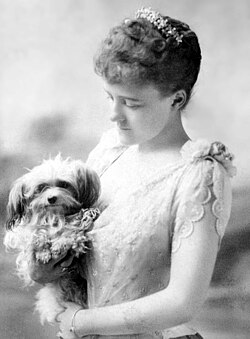
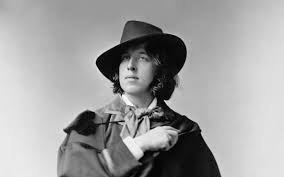

Welcome to my ENGLIT1900 website. Contained within are my blog posts for the semester. Feel free to navigate to them through the handy-dandy top bar, or through the links provided below:
My first blog explores The Picture of Dorian Gray by Oscar Wilde, and compares it with David Bowie's The Mask (A Mime) performance. Both works use the idea of concealing one's true self behind a persona, and how in both cases, leads to their destruction.
Blog Post #1: The Picture of Dorian Gray and David Bowie: wearing a “mask” for the public.My second blog looks at a quote in a video about David Bowie's perosnas and refutes it's claims. It details David Bowie's extravagent peronas and how his reinvention kept things fresh for him, and allowed him the creative energy to take on new, divere projects through thes reinventions.
Blog Post #2: David Bowie and ReinventionMy third blog explores The Lady's Maid's Bell and The Canterville Ghost, and how both stories frame the ghosts in the same manner. Both stories use the ghost as some kind of victim, either in life or death, and making the human characters antagonists rather than the ghosts themselves.
Blog Post #3: The Lady's Maid's Bell and The Canterville Ghost: Making Ghosts the VictimMy final project proposal:
Final Project ProposalIn case you haven't already noticed: I'm developing this website from scratch. I took a web development class last semester, and wanted to apply what I learned to make a simple website. Thank God we don't have to implement SQL databases! I also wanted to practice my HTML/CSS skills because that part of the course is one that I sort of blanked out on. Nonetheless, I hope that it suffices and provides a sufficient platorm for my blog posts.